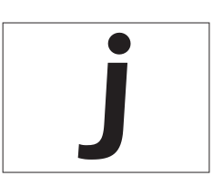
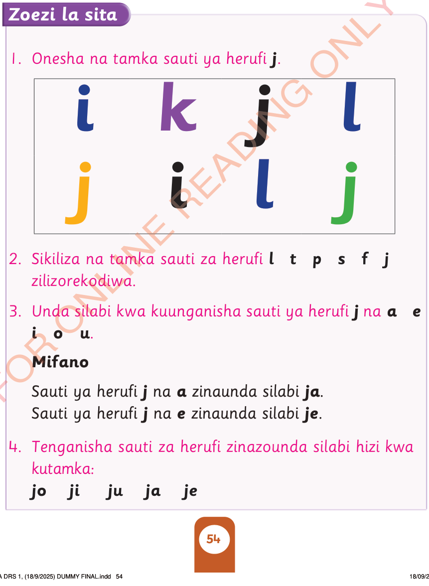

Tazama herufi hii:
Tamka sauti ya herufi hii:

Zoezi la sita
1. Onesha na tamka sauti ya herufi j.

2. Sikiliza na tamka sauti za herufi l t p s f j zilizorekodiwa.
3. Unda silabi kwa kuunganisha sauti ya herufi j na a e i o u.
Mifano
Sauti ya herufi j na a zinaunda silabi ja.
Sauti ya herufi j na e zinaunda silabi je.
4. Tenganisha sauti za herufi zinazounda silabi hizi kwa kutamka:
jo
ji
ju
ja
je
KUSOMA DRS 1, (18/9/2025) DUMMY FINAL.indd 54
18/09/2025 15:17